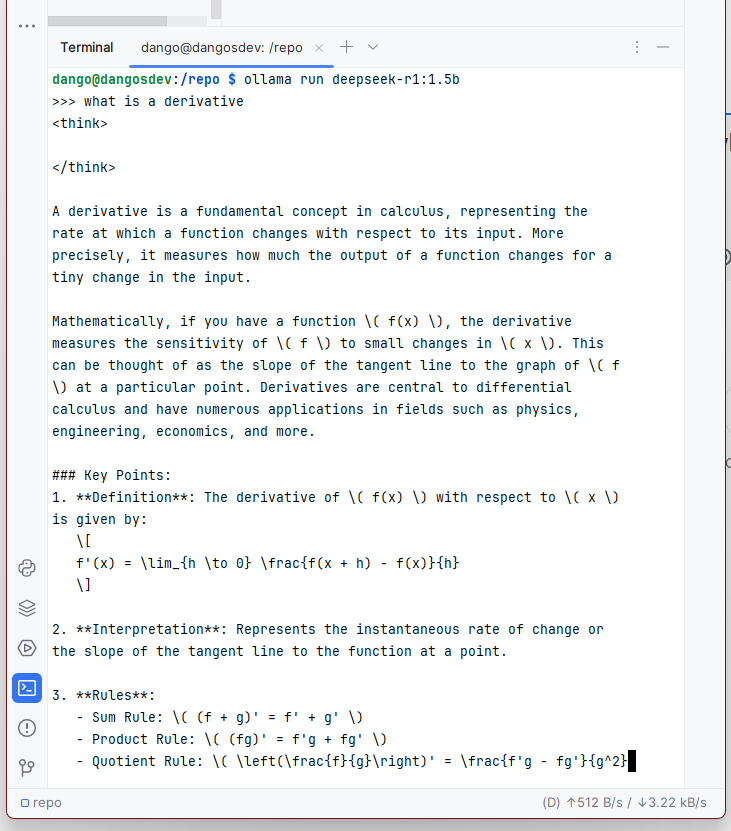

Hace unos días, un compañero de trabajo comenzó a inundar mi bandeja de entrada con artículos técnicos, benchmarks y repositorios de DeepSeek, un modelo de lenguaje orientado a razonamiento matemático y coding.
Al principio no presenté interés en el nuevo modelo (todo el tiempo sale una nueva IA revolucionaria), pero tras ver su persistencia (y un benchmark donde DeepSeek superaba a Llama2-7B en tareas de optimización de código), decidí explorarla poniéndome como reto ejecutarlo en una Raspberry Pi.
Este artículo no es solo una guía técnica. Es la demostración de que que los LLMs edge ya no son exclusivos de GPUs costosas.
Requisitos previos
Raspberry Pi 5 Modelo B (8 GB RAM): Configurada con Raspberry Pi OS 64-bit para aprovechar el espacio de direcciones ARMv8.
Ollama v0.1.27+: Herramienta crítica para gestionar modelos GGUF, aunque presentar errores en ARM.
Paso 1: Preparación inicial
Acceso remoto: Configuré SSH con claves RSA para seguridad, usando JetBrains Gateway por integración con el IDE.
Actualización de paquetes: Esencial para evitar conflictos con bibliotecas compartidas:
sudo apt update
sudo apt upgrade -y
El paquete curl suele venir preinstalado en Raspberry Pi OS, pero es recomendable verificarlo.
sudo apt install curl -y
Paso 2: Instalar Ollama
Ollama es un marco ligero para ejecutar LLMs localmente. Aunque no es oficialmente compatible con ARM, funciona en Raspberry Pi 5 usando la versión Linux ARM64:
Descargar e instalar Ollama:
curl -fsSL https://ollama.com/install.sh | sh
Verificar la instalación:
ollama --version
# Debe mostrar: "ollama version 0.1.x"
Paso 3: Despliegue de DeepSeek-R1
Descarga y ejecución:
ollama run deepseek-r1:1.5b
Prueba de concepto:

Análisis de resultados
Métrica
Valor
Implicación técnica
Uso de RAM
3.8 GB
Requiere gestión activa de swap en Pi de 4 GB
Temperatura CPU
72°C (sin cooling activo)
Necesidad de disipador pasivo
Debido a la gran cantidad de recursos que puede consumir ejecutar un modelo de inteligencia artificial localmente, es recomendable tener suficiente memoria y procesamiento.
Disponer de una GPU, aumentar el swap, usar modelos destilados y monitorear la ventilación son actividades que ayudarán a la ejecución fluída del modelo.
# Aumentar el swap modificando CONF_SWAPSIZE=4096, por ejemplo
sudo nano /etc/dphys-swapfile
sudo systemctl restart dphys-swapfile
¿Valió la pena el intento? Absolutamente. Como prueba de concepto, demuestra que los LLMs accesibles ya están aquí.